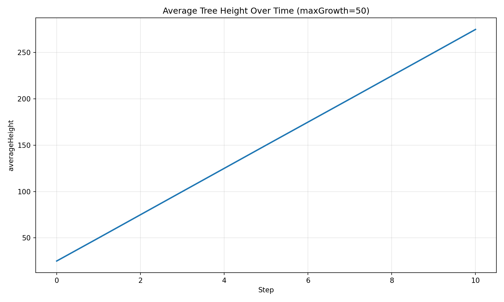
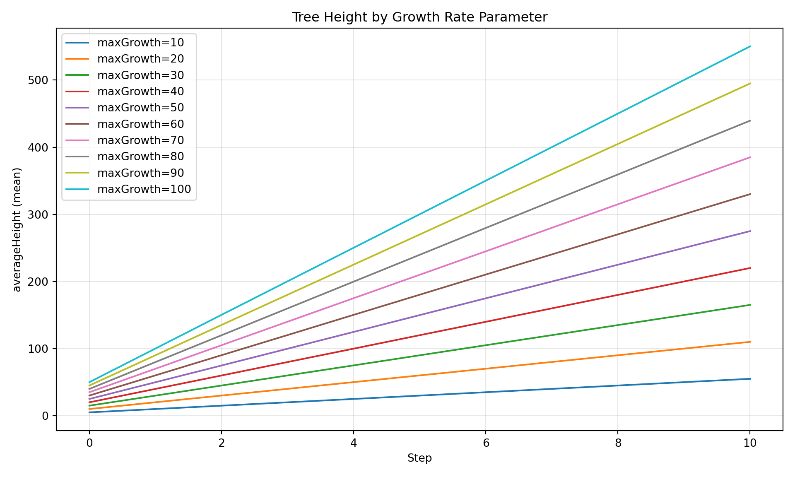
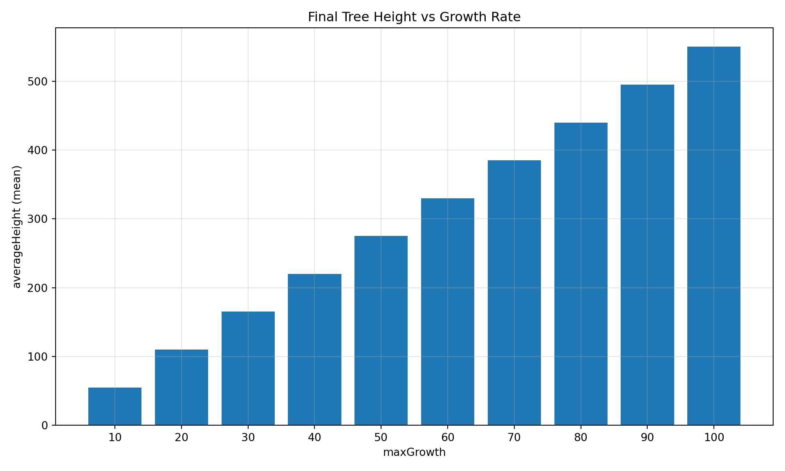
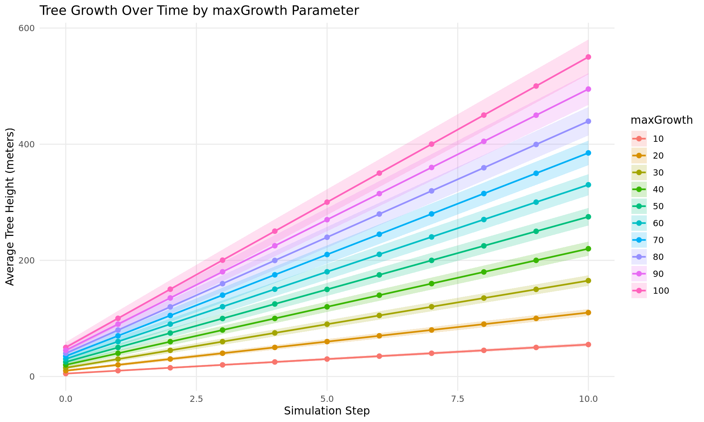
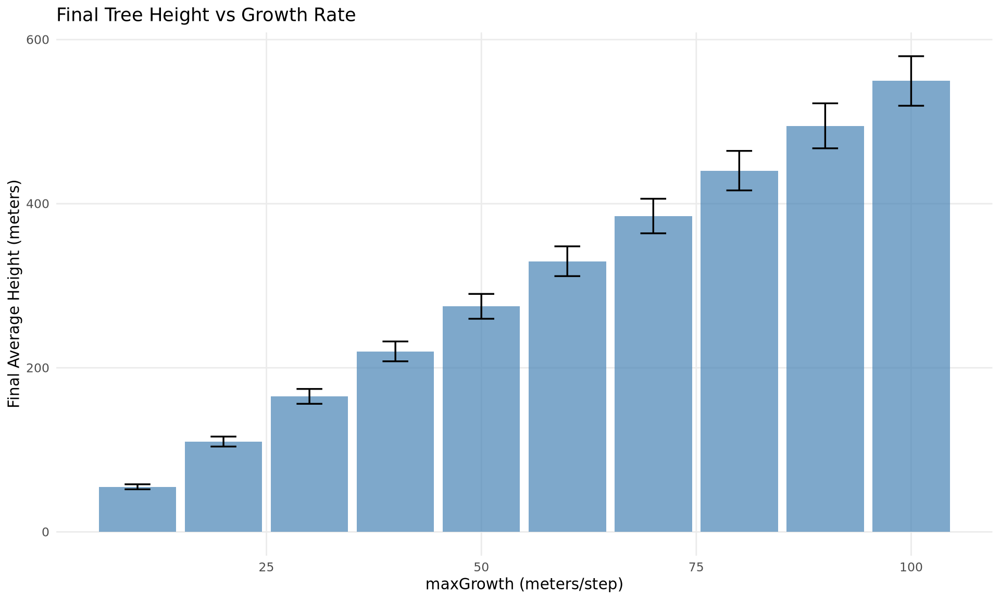

Tracking: Register runs in a DuckDB-backed registry with session and config tracking
Data Loading: Import cell-level CSV exports into queryable tables
Analysis: Query results across parameter values and replicates
Diagnostics: Quick matplotlib visualizations for simulation sanity checks
Visualization: Create publication-quality plots with R/ggplot2 integration
This demo walks through a complete parameter sweep workflow. We vary the maxGrowth parameter from 10 to 100 meters/step across 10 experiments, each with 3 replicates, then load, query, and visualize the results.
Prerequisites
Ensure the Josh JAR is available at jar/joshsim-fat.jar and joshpy is installed:
pip install -e'.[all]'
For visualization, ensure R is installed with the following packages:
print(f"Total runs: {len(MAX_GROWTH_VALUES)} x {config.replicates} = {len(MAX_GROWTH_VALUES) * config.replicates}")
Total runs: 10 x 3 = 30
Let’s examine the source files. The .josh file defines the simulation, and the .jshc.j2 template provides parameterized configuration:
Josh Source
print(SOURCE_PATH.read_text())
# A configurable version of hello_cli.josh
# Uses config variables from sweep_config.jshc for parameterization
start simulation Main
grid.size = 1000 m
grid.low = 33.7 degrees latitude, -115.4 degrees longitude
grid.high = 34.0 degrees latitude, -116.4 degrees longitude
grid.patch = "Default"
steps.low = 0 count
steps.high = 10 count
exportFiles.patch = "file:///tmp/hello_josh_{maxGrowth}_{replicate}.csv"
end simulation
start patch Default
ForeverTree.init = create 10 count of ForeverTree
export.averageAge.step = mean(ForeverTree.age)
export.averageHeight.step = mean(ForeverTree.height)
end patch
start organism ForeverTree
maxGrowth.init = config sweep_config.maxGrowth
age.init = 0 year
age.step = prior.age + 1 year
height.init = 0 meters
# maxGrowth is configurable via sweep_config.jshc
height.step = prior.height + sample uniform from 0 meters to maxGrowth
end organism
start unit year
alias years
alias yr
alias yrs
end unit
Template Configuration
print(TEMPLATE_PATH.read_text())
# Auto-generated configuration for hello_cli_configurable.josh
# Parameter sweep: maxGrowth={{ maxGrowth }}
# Maximum growth per timestep (meters)
maxGrowth = {{ maxGrowth }} meters
Notice that the .josh file references config sweep_config.maxGrowth - this pulls the value from our generated config file at runtime.
Step 2: Initialize Registry and Expand Jobs
The RunRegistry provides experiment tracking backed by DuckDB. It stores:
Sessions: High-level experiment metadata
Configs: Rendered configuration files with parameter values
Runs: Individual execution records with timing and exit codes
The JobExpander takes our JobConfig and generates concrete jobs - one per parameter combination, each with a unique config hash for tracking.
from joshpy.jobs import JobExpanderfrom joshpy.registry import RunRegistry# Create in-memory registry for this demoregistry = RunRegistry(":memory:")# Create a session to track this experimentsession_id = registry.create_session( experiment_name="growth_rate_sweep", simulation="Main", total_jobs=len(MAX_GROWTH_VALUES), total_replicates=len(MAX_GROWTH_VALUES) * config.replicates, template_path=str(TEMPLATE_PATH),)print(f"Session ID: {session_id}")
Session ID: e4669c87-9117-4d8a-a42f-272766bf88db
# Expand config into individual jobsexpander = JobExpander()job_set = expander.expand(config)print(f"Expanded to {len(job_set)} jobs")
Expanded to 10 jobs
# Register each job's config in the registryfor job in job_set.jobs: registry.register_config( session_id=session_id, config_hash=job.config_hash, config_content=job.config_content, parameters=job.parameters, )print(f" maxGrowth={job.parameters['maxGrowth']:>3} -> hash={job.config_hash}")
The JoshCLI executes jobs via the Josh command-line interface. The to_run_config() helper converts an ExpandedJob to a RunConfig dataclass that maps directly to CLI arguments:
Source file and simulation name
Config file path (via --data flag)
Custom tags for template variable resolution (via --custom-tag)
Replicate count
The RegistryCallback automatically records run metadata as each job completes.
succeeded =sum(1for _, r in results if r.success)print(f"Completed: {succeeded}/{len(results)} succeeded")
Completed: 10/10 succeeded
# Update final session statusfinal_status ="completed"if succeeded ==len(results) else"failed"registry.update_session_status(session_id, final_status)
Step 4: Load Cell Data from CSVs
Josh exports simulation data to CSV files. The CellDataLoader imports these into a DuckDB cell_data table, linking each row to its originating run via run_id and config_hash. This enables queries that join parameters with results.
from joshpy.cell_data import CellDataLoaderloader = CellDataLoader(registry)print("Loading CSV exports into registry...")
Loading CSV exports into registry...
total_loaded =0files_found =0for job, result in results:ifnot result.success:continue mg = job.parameters["maxGrowth"]# Get run_id from registry (created by RegistryCallback) runs = registry.get_runs_for_config(job.config_hash)ifnot runs:print(f" Skipping maxGrowth={mg} (no run_id)")continue run_id = runs[0].run_id# Load each replicate's CSVfor rep inrange(job.replicates): csv_path = Path(f"/tmp/hello_josh_{mg}_{rep}.csv")if csv_path.exists(): rows = loader.load_csv(csv_path, run_id=run_id, config_hash=job.config_hash) total_loaded += rows files_found +=1print(f"\nLoaded {total_loaded:,} rows from {files_found} files")
Loaded 1,043,460 rows from 30 files
Step 5: Diagnostic Plotting (Python)
The SimulationDiagnostics class provides quick matplotlib-based visualizations for simulation sanity checks - useful for verifying that simulations behave as expected before deeper analysis.
Discover Available Data
First, let’s see what data is available in the registry:
# Get summary of loaded datasummary = registry.get_data_summary()print(summary)
The plot_timeseries() method shows how a variable evolves over simulation steps. By default, it spatially aggregates across patches and shows uncertainty bands across replicates.
from joshpy.diagnostics import SimulationDiagnosticsdiag = SimulationDiagnostics(registry)# Plot time series for a specific parameter value# Filter by maxGrowth=50 to see a single experimentdiag.plot_timeseries("averageHeight", maxGrowth=50, title="Average Tree Height Over Time (maxGrowth=50)", show=True,)

Figure 1: Tree height over time for maxGrowth=50, with uncertainty bands across replicates.
Parameter Comparison
The plot_comparison() method compares a variable across different parameter values - ideal for visualizing parameter sweep results.
# Compare averageHeight across all maxGrowth valuesdiag.plot_comparison("averageHeight", group_by="maxGrowth", title="Tree Height by Growth Rate Parameter", show=True,)

Figure 2: Tree height trajectories across all maxGrowth parameter values.
We can also create a bar chart at a specific timestep:
# Bar chart at final stepdiag.plot_comparison("averageHeight", group_by="maxGrowth", step=10, title="Final Tree Height vs Growth Rate", show=True,)

Figure 3: Final tree height at step 10 for each maxGrowth value.
Saving Figures
All plot methods return a matplotlib Figure that can be saved:
# Save to file instead of showing inlinefig = diag.plot_comparison("averageHeight", group_by="maxGrowth", show=False,)fig.savefig("/tmp/diagnostic_comparison.png", dpi=150, bbox_inches="tight")print("Saved to /tmp/diagnostic_comparison.png")
Saved to /tmp/diagnostic_comparison.png
Step 6: Visualize Results (R)
For publication-quality figures or more customized visualizations, we can pass data to R for visualization using ggplot2. The DiagnosticQueries class provides ready-made queries that return pandas DataFrames, which we can export to CSV for R.
First, let’s query the data and export it:
from joshpy.cell_data import DiagnosticQueriesqueries = DiagnosticQueries(registry)# Compare averageHeight across all maxGrowth valuesdf = queries.get_parameter_comparison( variable="averageHeight", param_name="maxGrowth",)print(f"Retrieved {len(df)} rows\n")
Retrieved 110 rows
ifnot df.empty:print("Sample data (first 15 rows):")print(df.head(15).to_string(index=False))# Save to CSV for R visualization df.to_csv("/tmp/sweep_results.csv", index=False)print("\nSaved results to /tmp/sweep_results.csv")
Now we can use ggplot2 in R to create publication-quality figures:
Time series: Tree height over simulation steps with ribbon for uncertainty
Bar chart: Final height vs growth rate parameter with error bars
# Read results from CSV exported by Pythondf <-read.csv("/tmp/sweep_results.csv")if (nrow(df) >0) { p <-ggplot(df, aes(x = step, y = mean_value, color =factor(param_value), fill =factor(param_value))) +geom_ribbon(aes(ymin = mean_value - std_value, ymax = mean_value + std_value), alpha =0.2, color =NA) +geom_line(linewidth =0.8) +geom_point(size =2) +labs(x ="Simulation Step",y ="Average Tree Height (meters)",title ="Tree Growth Over Time by maxGrowth Parameter",color ="maxGrowth",fill ="maxGrowth" ) +theme_minimal() +theme(legend.position ="right",panel.grid.minor =element_blank() )print(p)} else {cat("No data to plot.")}

Figure 4: Tree height trajectories for different maxGrowth parameter values. Higher growth rates produce taller trees, as expected.
# Read results from CSV exported by Pythondf <-read.csv("/tmp/sweep_results.csv")if (nrow(df) >0) { final_df <- df |> dplyr::filter(step ==max(step)) p <-ggplot(final_df, aes(x = param_value, y = mean_value)) +geom_col(fill ="steelblue", alpha =0.7) +geom_errorbar(aes(ymin = mean_value - std_value, ymax = mean_value + std_value),width =3,linewidth =0.6 ) +labs(x ="maxGrowth (meters/step)",y ="Final Average Height (meters)",title ="Final Tree Height vs Growth Rate" ) +theme_minimal() +theme(panel.grid.minor =element_blank())print(p)# Calculate and print correlation r <-cor(final_df$param_value, final_df$mean_value)cat(sprintf("\nCorrelation between maxGrowth and final height: r = %.4f\n", r))} else {cat("No data to plot.")}
Correlation between maxGrowth and final height: r = 1.0000

Figure 5: Final tree height vs growth rate parameter. Error bars show standard deviation across replicates.
Summary
This demo illustrated the core joshpy workflow:
Define a parameter sweep using JobConfig and SweepConfig
Track experiments with RunRegistry sessions and configs
Execute simulations via JobRunner with automatic tracking
Load CSV outputs into queryable DuckDB tables
Query results across parameters using DiagnosticQueries
Diagnose simulation behavior with SimulationDiagnostics (Python/matplotlib)
Visualize publication-quality figures with ggplot2 (R)
The registry-backed approach ensures reproducibility and enables complex queries joining parameters with results across multiple experiments.
Diagnostic Plotting: The SimulationDiagnostics class provides quick matplotlib-based visualizations for sanity checks during development:
plot_timeseries(): Variable evolution over time with uncertainty bands
plot_comparison(): Compare across parameter values (time series or bar chart)
plot_spatial(): Spatial snapshots at specific timesteps
Discovery Methods: Before plotting, use registry.get_data_summary(), registry.list_variables(), and registry.list_parameters() to see what data is available.
This document also demonstrates Quarto’s ability to seamlessly combine R and Python in the same workflow using reticulate. Python handles the simulation orchestration, data querying, and quick diagnostics, while R handles publication-quality visualization with ggplot2.